مشغّل البرنامج
بوابة مشغّل البرنامج: الإعداد والإدارة
جهّز برنامج دعم المرضى وأدِره يومًا بيوم: دليل المنتجات، والبرنامج ونموذج تسجيله، وشبكتا الأطباء والصيدليات، وأماكن المرضى، والعاملون على البوابة.
لمسؤولي المشغّل وللمسؤول الرئيسي.
اضغط على الصورة لتكبيرها.
قبل أن تبدأ
بوابة مشغّل البرنامج صفحة ويب تُستخدم على الكمبيوتر، وكل ما فيها يخص عميلًا واحدًا هو المكتب العلمي الذي تدير جهتك برامجه. يدخل إليها ثلاثة أنواع من المستخدمين:
- مسؤول المشغّل يجهّز البرامج: المنتجات والبرامج والشبكات والأماكن والمستخدمين والإعدادات. هذا الدليل موجّه إليك.
- المسؤول الرئيسي له صلاحيات مسؤول المشغّل كلها وبعض الصلاحيات الإضافية (انظر للمسؤول الرئيسي)، ولكل مساحة عمل مسؤول رئيسي واحد.
- منسّق البرنامج يتابع حالات المرضى، ولعمله دليل مستقل هو دليل المنسّق.
بيانات الدخول. رقم موبايلك وكلمة مرور. يحدد المسؤول الذي ينشئ حسابك كلمة مرور مؤقتة ويسلّمها لك بنفسه، فالبوابة لا ترسل رسائل نصية ولا بريدًا إلكترونيًا.
يسير إعداد البرنامج بهذا الترتيب:
| الخطوة | أين |
|---|---|
| ١. أضف الدواء وسعّر تشغيلاته | دليل المنتجات |
| ٢. أنشئ البرنامج | البرامج ← برنامج جديد |
| ٣. انشر نموذج التسجيل | البرامج ← نموذج التسجيل |
| ٤. أضف الأطباء والصيدليات | شبكة الأطباء وشبكة الصيدليات |
| ٥. وزّع أماكن المرضى | توزيع الكوبونات والشبكتان |
| ٦. أطلق البرنامج | صفحة البرنامج نفسه |
| ٧. امنح المنسّقين صلاحياتهم | المستخدمون |
تسجيل الدخول
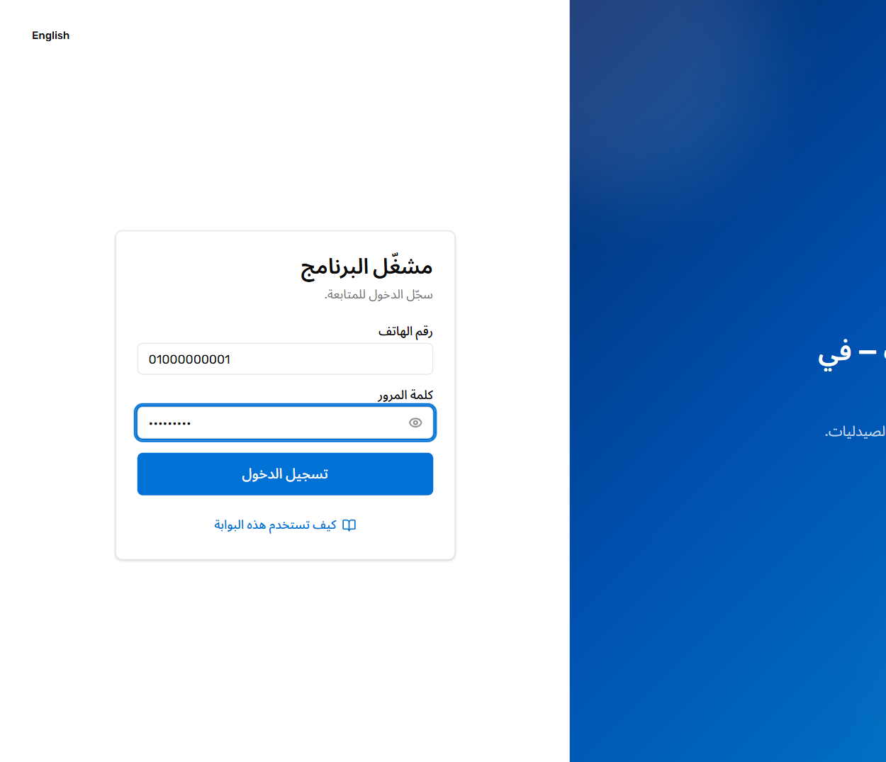
- 1رقم الهاتف: رقم موبايلك.
- 2كلمة المرور: كلمة المرور المؤقتة التي تسلّمتها، أو كلمة مرورك.
- 3اضغط على العين لإظهار كلمة المرور أثناء كتابتها.
- 4تسجيل الدخول يفتح البوابة.
- 5بدّل لغة الشاشة بين العربية وEnglish في أي وقت.
- 6كيف تستخدم هذه البوابة يفتح هذا الدليل في علامة تبويب جديدة.
التنقل في البوابة
تفتح البوابة بعد الدخول على صفحة البرامج. القائمة الجانبية تضم كل الصفحات؛ اضغط على أي منها لفتحها.
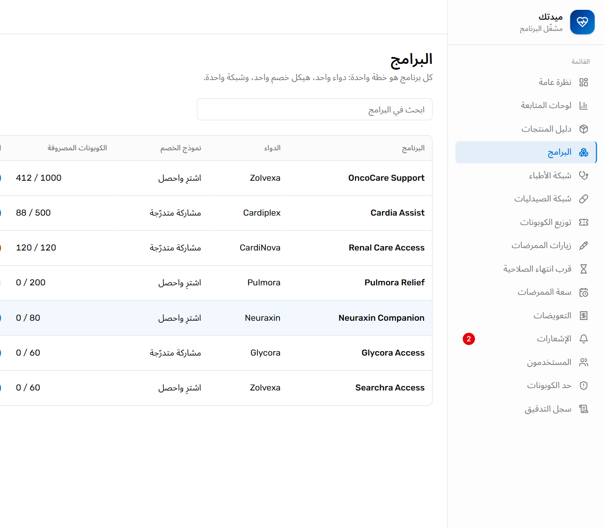
- 1نظرة عامة: أين تقف برامجك اليوم.
- 2البرامج: إنشاء البرامج وإدارتها. الصفحة المفتوحة تظهر مميَّزة.
- 3الإشعارات: تنبيهاتك، والرقم الأحمر يعرض عدد غير المقروء.
- 4المستخدمون: العاملون على هذه البوابة.
- 5سجل التدقيق: سجل كل التغييرات.
وفي القائمة أيضًا لوحات المتابعة ودليل المنتجات وشبكة الأطباء وشبكة الصيدليات وتوزيع الكوبونات وزيارات الممرضات وقرب انتهاء الصلاحية وسعة الممرضات والتعويضات وحد الكوبونات، ولكل منها قسم في هذا الدليل.
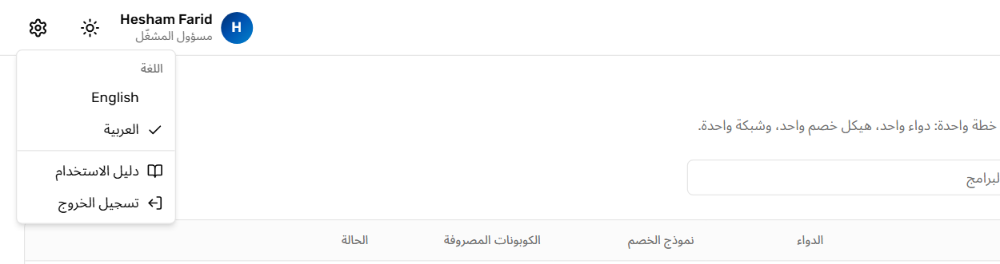
- 1اسمك ودورك.
- 2التبديل بين الشاشة الفاتحة والداكنة.
- 3اللغة: العربية أو English.
- 4دليل الاستخدام يفتح هذا الدليل في علامة تبويب جديدة.
- 5تسجيل الخروج: سجّل الخروج دائمًا على الكمبيوتر المشترك.
نظرة عامة
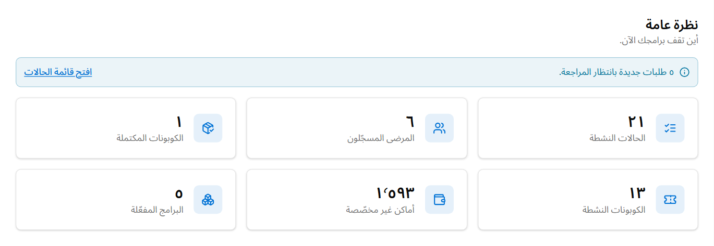
- 1نظرة عامة تعرض أين تقف برامجك الآن.
- 2عدد الطلبات الجديدة التي تنتظر المراجعة. المراجعة من عمل المنسّقين، وهم يفتحون هذه الطلبات من قائمة حالاتهم.
- 3الحالات النشطة، وبجانبها المرضى المسجّلون والكوبونات المكتملة.
- 4أماكن غير مخصّصة: أماكن لم يحصل عليها طبيب أو صيدلية أو منسّق بعد.
- 5البرامج المفعّلة: عدد البرامج المفتوحة للتسجيل.
للأرقام التفصيلية استخدم لوحات المتابعة.
دليل المنتجات
يقوم كل برنامج على منتج، لذلك يأتي الدليل أولًا. يزوّدك المكتب العلمي بالقائمة، وأنت تُدخلها هنا.
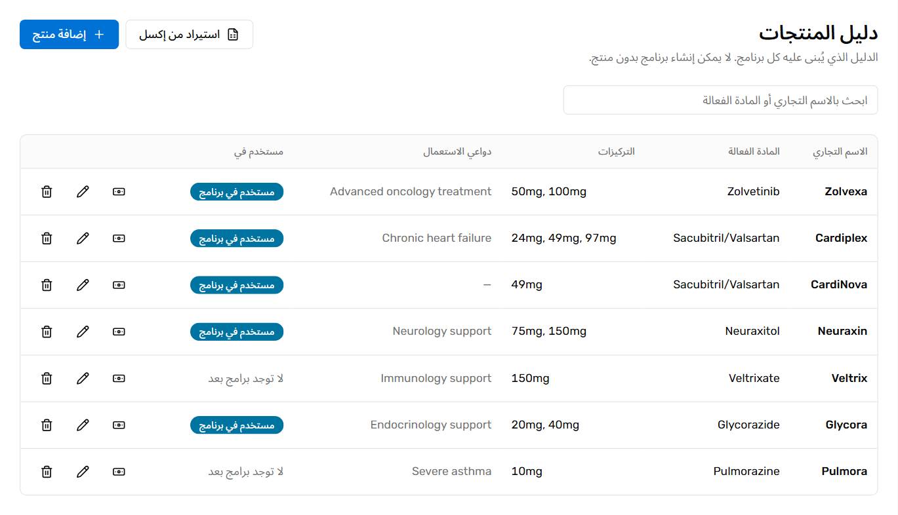
- 1استيراد من إكسل يضيف منتجات كثيرة أو يحدّثها دفعة واحدة.
- 2إضافة منتج يضيف منتجًا واحدًا.
- 3ابحث بالاسم التجاري أو المادة الفعالة.
- 4مستخدم في يوضح هل يقوم برنامج على هذا المنتج.
- 5زر التسعير يفتح تشغيلات المنتج وأسعارها.
- 6القلم لتعديل المنتج.
- 7سلة المهملات لإزالته. لا يمكن إزالة منتج يقوم عليه برنامج.
إضافة منتج أو تعديله
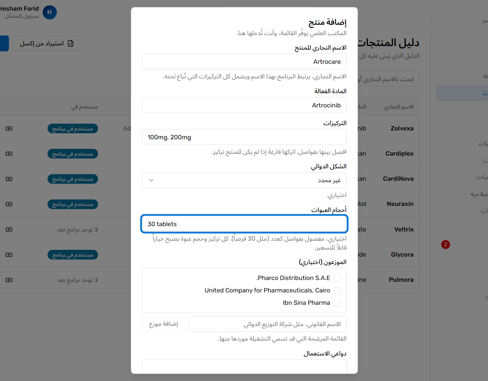
- 1الاسم التجاري للمنتج: يرتبط البرنامج بهذا الاسم ويشمل كل التركيزات التي تُباع تحته.
- 2المادة الفعالة.
- 3التركيزات مفصولة بفواصل، مثل 100mg, 200mg.
- 4الشكل الدوائي: أقراص أو حقن أو سائل، وهو اختياري.
- 5أحجام العبوات مفصولة بفواصل، مثل 30 قرصًا، وهي اختيارية. كل تركيز وحجم عبوة يصبح خيارًا يمكن تسعيره.
- 6الموزعون (اختياري): الموردون الذين يمكن أن تُنسب إليهم التشغيلة. اكتب اسم مورد جديد واضغط إضافة موزع لإضافته إلى القائمة.
اضغط إضافة منتج (أو حفظ عند التعديل) أسفل النموذج.
استيراد المنتجات من إكسل
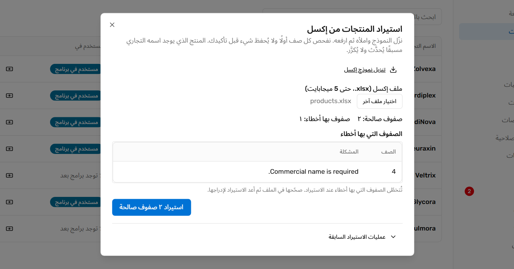
- 1تنزيل نموذج إكسل ثم املأه بمنتج واحد في كل صف.
- 2اختر الملف بعد ملئه: ملف إكسل بصيغة .xlsx لا يتجاوز 5 ميجابايت.
- 3تفحص البوابة كل الصفوف أولًا وتعدّ الصفوف الصالحة والصفوف التي بها أخطاء، ولا يُحفظ شيء بعد.
- 4الصفوف التي بها أخطاء تذكر كل صف به خطأ وسببه.
- 5استيراد … صفوف صالحة يحفظ الصفوف الصالحة ويتخطى الصفوف التي بها أخطاء؛ صحّحها في الملف ثم استورده مرة أخرى.
- 6عمليات الاستيراد السابقة تعرض ما أنشأته كل عملية سابقة وما حدّثته وما تخطّته.
تسعير المنتج: التشغيلات
يأخذ كل خيار من خيارات المنتج (التركيز، ومعه حجم العبوة إن وُجد) سعره من التشغيلات التي تسجّلها. الخيار الذي لا توجد له تشغيلة لا سعر له ولا يمكن صرفه.
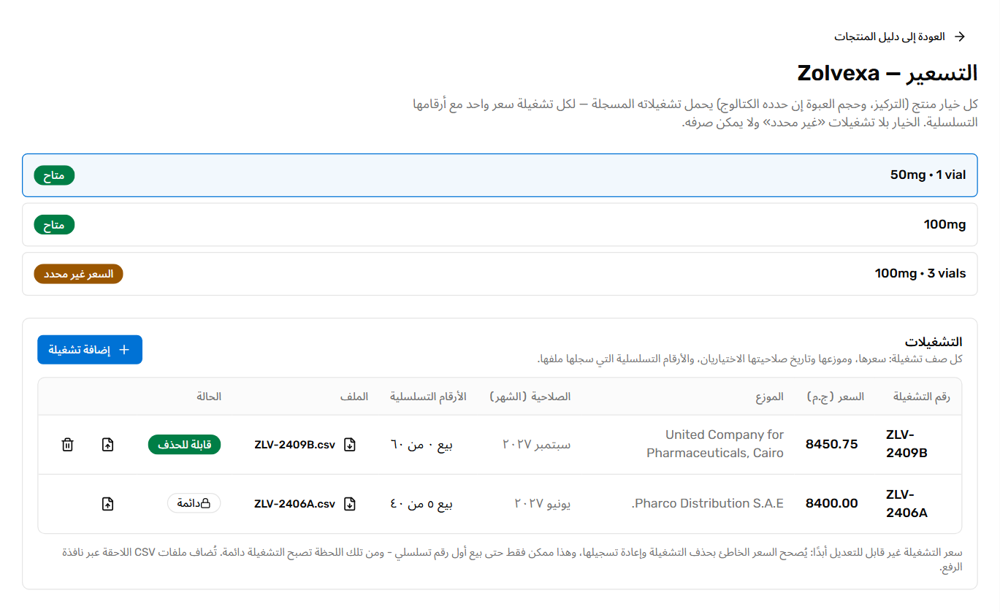
- 1خيارات المنتج. اضغط على أحدها لعرض تشغيلاته.
- 2السعر غير محدد: لا توجد تشغيلة لهذا الخيار بعد، أما متاح فيعني أنه قابل للصرف.
- 3إضافة تشغيلة يسجّل تشغيلة جديدة للخيار المحدد.
- 4دائمة: بيعت علبة من هذه التشغيلة فلم يعد حذفها ممكنًا، أما قابلة للحذف فتعني أنه لم يُبع منها شيء بعد.
- 5يفتح ملفات الأرقام التسلسلية للتشغيلة. من هنا تضيف ملفًا لاحقًا، فيبقى مسودة حتى تؤكده، ويمكن التراجع عن الملف بعد تأكيده.
- 6يحذف التشغيلة، وهذا ممكن فقط ما دام لم يُبع منها شيء.
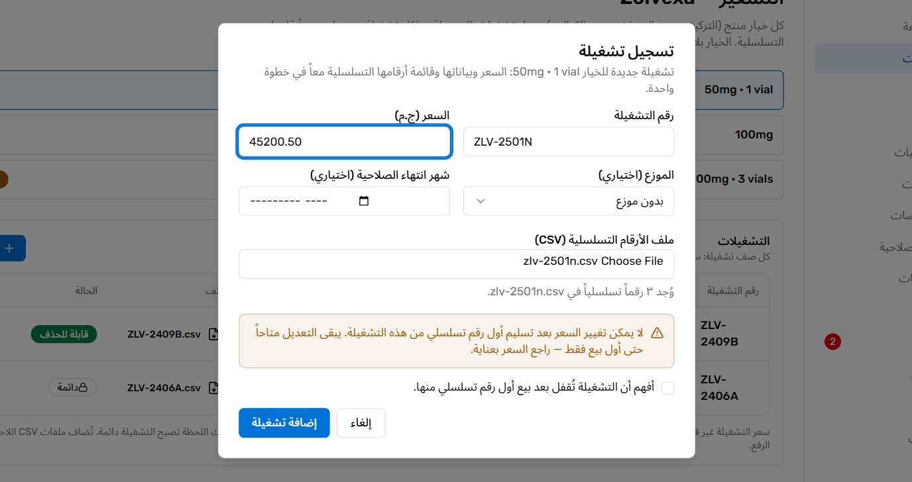
- 1رقم التشغيلة.
- 2السعر (ج.م): سعر العلبة الواحدة من هذه التشغيلة.
- 3الموزع (اختياري): يُختار من موزعي المنتج.
- 4ملف الأرقام التسلسلية (CSV): ملف .csv لا يتجاوز 2 ميجابايت فيه الأرقام التسلسلية للعلب، في عمود Serial أو رقمًا في كل سطر. تعرض البوابة عدد الأرقام التي وجدتها.
- 5ضع علامة على أفهم أن التشغيلة تُقفل بعد بيع أول رقم تسلسلي منها.
- 6إضافة تشغيلة يسجّل التشغيلة.
البرامج
البرنامج خطة واحدة: دواء واحد، وخصم واحد، وشبكة واحدة.
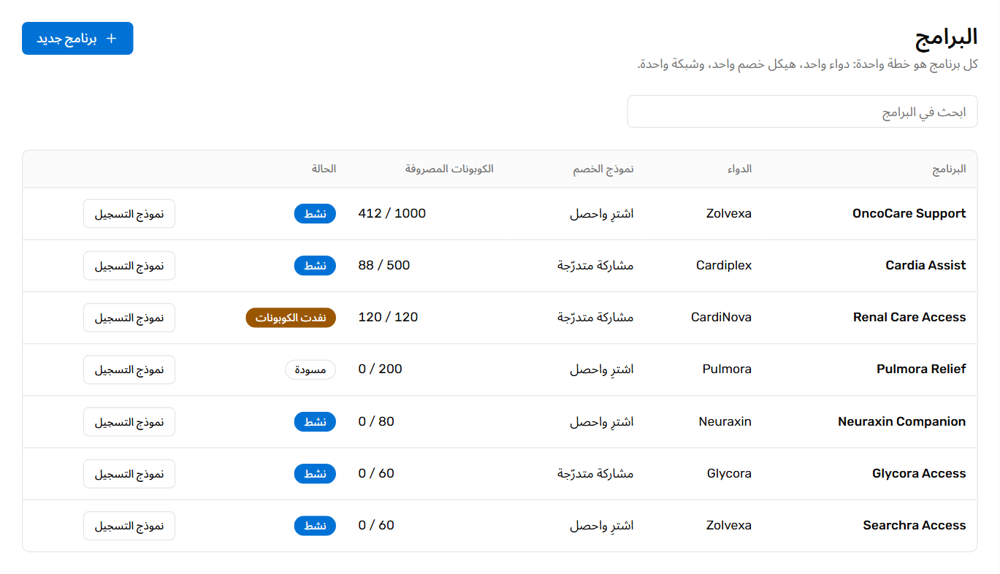
- 1برنامج جديد يفتح مُنشئ البرنامج.
- 2ابحث في البرامج بالاسم أو الدواء.
- 3اضغط على اسم البرنامج لفتح صفحته.
- 4الكوبونات المصروفة: الكوبونات التي صُرفت من إجمالي الكوبونات الممولة.
- 5الحالة: حالة البرنامج.
- 6نموذج التسجيل يفتح نموذج تسجيل البرنامج.
| الحالة | المعنى |
|---|---|
| مسودة | قيد الإعداد، ولا يمكن تسجيل أحد فيه بعد. |
| نشط | مفتوح للتسجيل. |
| نفدت الكوبونات | استُخدمت كل الكوبونات الممولة. يتوقف التسجيل الجديد، ويُكمل من يحمل كوبونًا جرعاته. |
| متوقف نهائيًا | أُوقف نهائيًا ولا يمكن أن يعود نشطًا أبدًا. |
إنشاء برنامج جديد
اضغط برنامج جديد. يتكون المُنشئ من ثماني خطوات يعرضها شريط في أعلى الصفحة. يتحقق زر متابعة من الخطوة المعروضة ثم ينتقل إلى التالية، ويمكنك أيضًا الضغط على أي خطوة في الشريط للرجوع إليها، ويبقى ما كتبته محفوظًا أثناء التنقل. لا يُحفظ شيء حتى تحفظ في الخطوة الأخيرة المراجعة والحفظ، وإذا حاولت المغادرة قبل الحفظ تسألك البوابة الخروج دون حفظ؟ ويُحفظ البرنامج الجديد كمسودة، فلا يُسجَّل فيه أحد حتى تطلقه.
ويمكنك أيضًا تعبئة المُنشئ من ملف Excel بدل الكتابة؛ انظر إعداد برنامج أو نسخه بملف Excel.
١. الهوية والمنتج
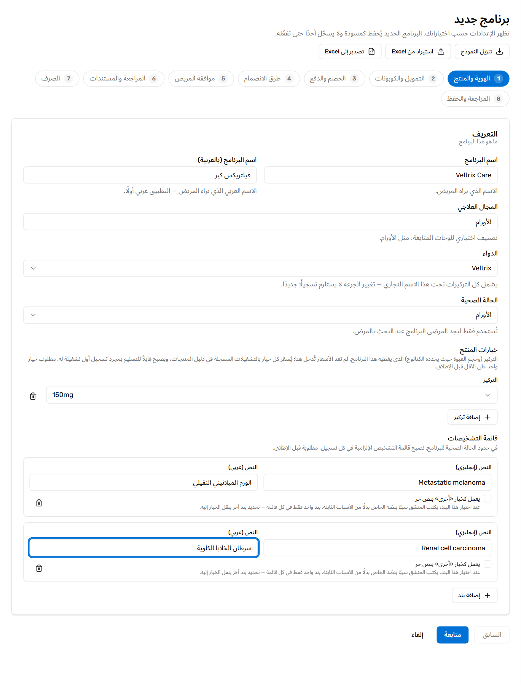
- 1شريط الخطوات، وتظهر علامة صح على كل خطوة أكملتها.
- 2اسم البرنامج: الاسم الذي يراه المريض.
- 3اسم البرنامج (بالعربية): الاسم العربي الذي يراه المريض، فتطبيق المريض عربي أولًا.
- 4الدواء: المنتج من دليل المنتجات. لا يقوم على الدواء الواحد إلا برنامج واحد.
- 5خيارات المنتج: اضغط إضافة تركيز واختر كل تركيز (وحجم العبوة) يشمله البرنامج. تأتي الأسعار من تشغيلات المنتج لا من هنا.
- 6قائمة التشخيصات: اضغط إضافة بند لكل تشخيص بالعربية والإنجليزية. يختار الطبيب أحدها إلزامًا عند تسجيل المريض.
المجال العلاجي تصنيف اختياري للوحات المتابعة، والحالة الصحية تساعد المرضى على إيجاد البرنامج عند البحث بالمرض.
٢. التمويل والكوبونات
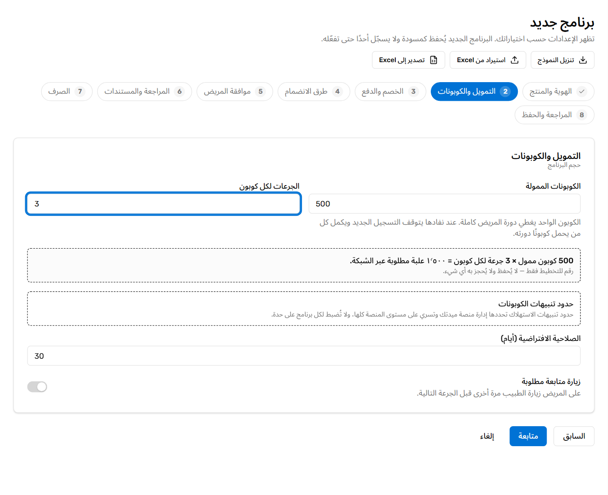
- 1الكوبونات الممولة: عدد المرضى الذين يتكفل بهم البرنامج. الكوبون الواحد يغطي مسار المريض كاملًا، وعند نفادها يتوقف التسجيل الجديد.
- 2الجرعات لكل كوبون: عدد الجرعات التي يحصل عليها المريض الواحد.
- 3رقم للتخطيط: عدد العلب التي ستحتاجها الشبكة. لا يُحفظ ولا يُحجز به شيء.
- 4الصلاحية الافتراضية (أيام).
- 5زيارة متابعة مطلوبة: فعّلها إذا كان على المريض زيارة الطبيب مرة أخرى قبل الجرعة التالية، ثم حدد أول يوم وآخر يوم.
أما حدود تنبيهات الكوبونات فتضبطها MedTech للمنصة كلها، لا هنا.
٣. الخصم والدفع
اختر أولًا نموذج الخصم، فلا تظهر إلا إعدادات النموذج الذي تختاره.
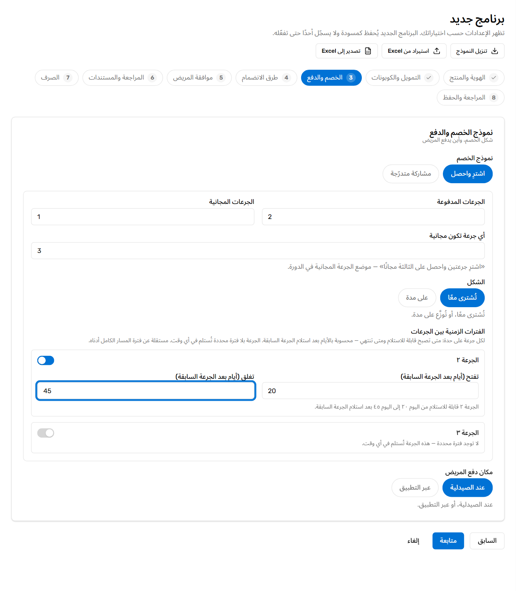
- 1نموذج الخصم: اشترِ واحصل أو مشاركة متدرّجة.
- 2الجرعات المدفوعة والجرعات المجانية، ويجب أن يساوي مجموعهما الجرعات لكل كوبون.
- 3أي جرعة تكون مجانية، مثل 3 في «اشترِ جرعتين واحصل على الثالثة مجانًا».
- 4الشكل: الجرعات تُشترى معًا أو تُوزَّع على مدة، وفي الحالة الثانية تُضاف فترة المسار الكامل وفترة السماح.
- 5الفترات الزمنية بين الجرعات: فعّل الفترة لأي جرعة لاحقة لتحدد متى تُفتح ومتى تُغلق، بالأيام بعد استلام الجرعة السابقة. الجرعة التي لا فترة لها تُستلم في أي وقت.
- 6مكان دفع المريض: عند الصيدلية أو عبر التطبيق.
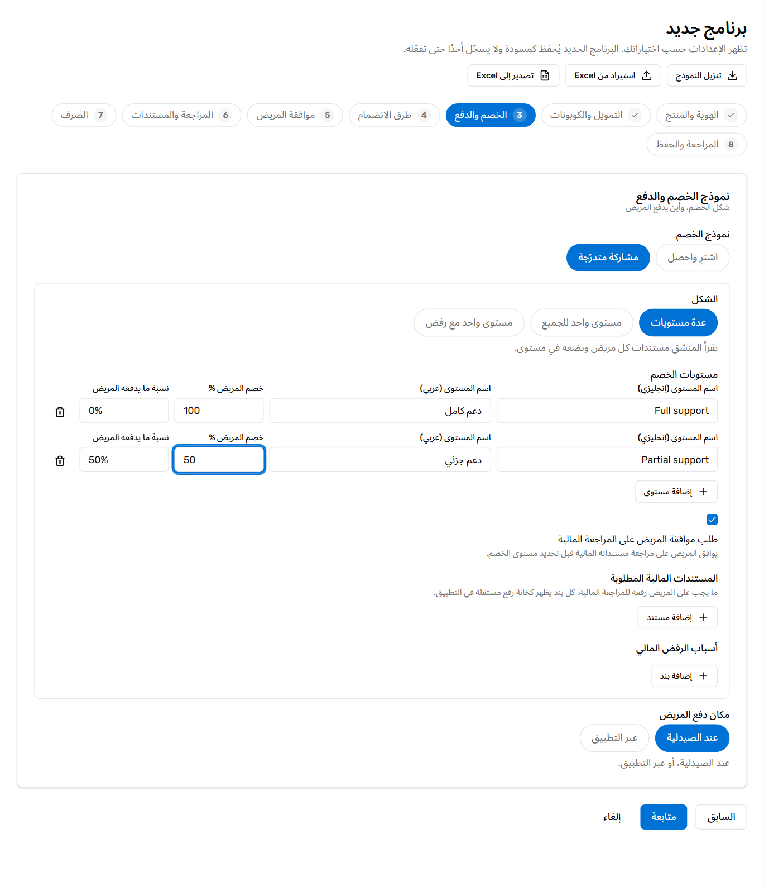
- 1نموذج الخصم مضبوط على مشاركة متدرّجة.
- 2الشكل: عدة مستويات (يضع المنسّق كل مريض في مستوى)، أو مستوى واحد للجميع، أو مستوى واحد مع رفض (وللمنسّق رفض من لا يستوفي الشرط).
- 3مستويات الخصم: اسم كل مستوى بالإنجليزية والعربية وخصم المريض %، ويضيف إضافة مستوى مستوى آخر.
- 4نسبة ما يدفعه المريض تُحسب من نسبة الخصم.
- 5المستندات المالية المطلوبة: ما يرفعه المريض للمراجعة المالية. ويمكنك كذلك طلب موافقة المريض على هذه المراجعة، وكتابة أسباب الرفض المالي.
- 6مكان دفع المريض: عند الصيدلية أو عبر التطبيق.
٤. طرق الانضمام
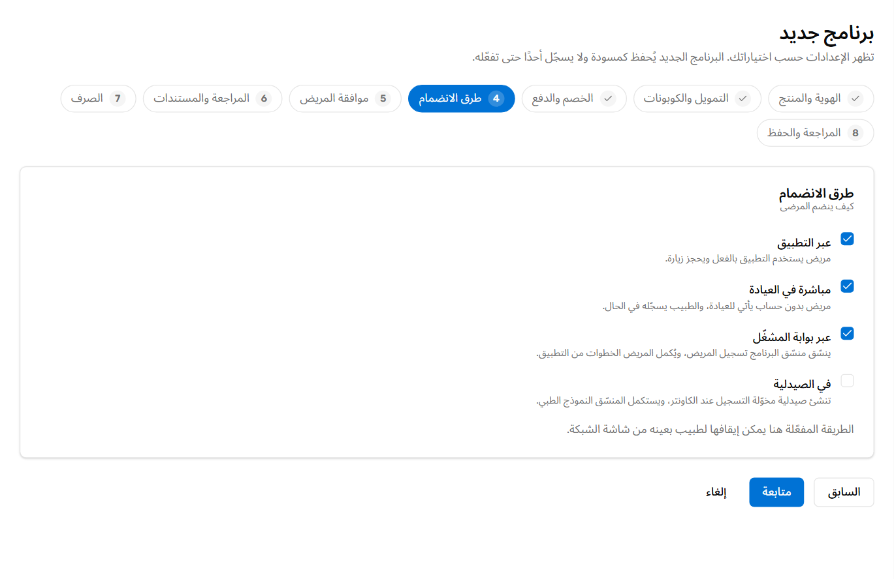
- 1عبر التطبيق: مريض يستخدم التطبيق بالفعل ويحجز زيارة.
- 2مباشرة في العيادة: مريض بلا حساب يأتي إلى العيادة فيسجّله الطبيب في الحال.
- 3عبر بوابة المشغّل: يسجّل منسّق البرنامج المريض، ثم يُكمل المريض الخطوات من التطبيق.
- 4في الصيدلية: صيدلية تسمح لها بالتسجيل تُنشئ التسجيل عند الكاونتر، ويستكمل المنسّق النموذج.
- 5الطريقة المفعّلة هنا يمكن إيقافها لطبيب بعينه من صفحة شبكة الأطباء.
فعّل طريقة انضمام واحدة على الأقل. وتحتاج طريقة في الصيدلية أيضًا إلى أن يسمح مسؤول من MedTech لجهتك بتسجيل الصيدليات للمرضى، وإلا تعذّر حفظ البرنامج بها.
٥. موافقة المريض
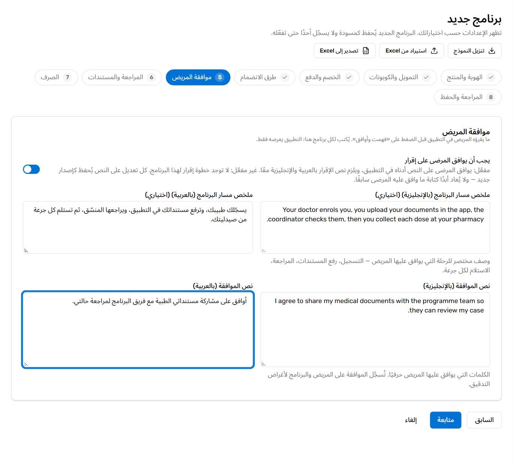
- 1يجب أن يوافق المرضى على إقرار: عند تفعيله يوافق المرضى في التطبيق على النص المكتوب أدناه.
- 2ملخص مسار البرنامج: وصف قصير واختياري لرحلة المريض بالعربية والإنجليزية.
- 3نص الموافقة (بالإنجليزية): الكلمات التي يوافق عليها المريض حرفيًا.
- 4نص الموافقة (بالعربية). اللغتان مطلوبتان عند تفعيل الموافقة.
كل تغيير في النص يُحفظ كإصدار جديد، ولا يُعاد أبدًا كتابة ما وافق عليه المرضى السابقون.
٦. المراجعة والمستندات
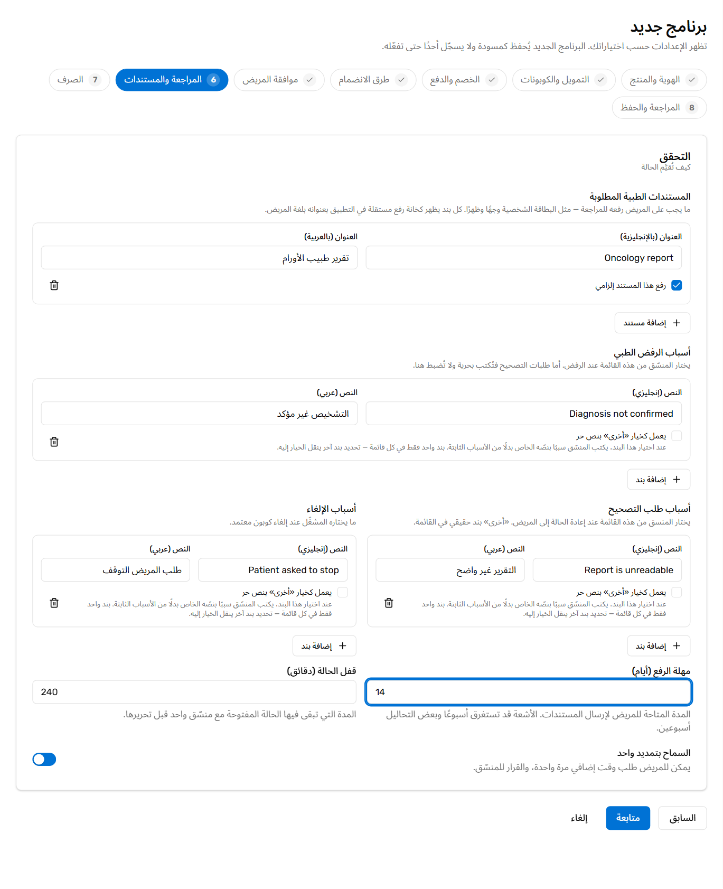
- 1المستندات الطبية المطلوبة: كل بند يصبح خانة رفع واحدة في تطبيق المريض. ضع علامة على رفع هذا المستند إلزامي للمستندات المطلوبة.
- 2أسباب الرفض الطبي: القائمة التي يختار منها المنسّق عند رفض الحالة.
- 3أسباب طلب التصحيح: القائمة التي يختار منها المنسّق عند إعادة الحالة إلى المريض.
- 4أسباب الإلغاء: القائمة المستخدمة عند إلغاء كوبون معتمد.
- 5مهلة الرفع (أيام): المدة المتاحة للمريض لإرسال المستندات.
- 6قفل الحالة (دقائق): المدة التي تبقى فيها الحالة المفتوحة مع منسّق واحد قبل تحريرها.
- 7السماح بتمديد واحد: يمكن للمريض طلب وقت إضافي للرفع مرة واحدة، والقرار للمنسّق.
في كل قائمة أسباب يمكنك وضع علامة على يعمل كخيار «أخرى» بنص حر لبند واحد فقط، والمنسّق الذي يختاره يكتب السبب بنفسه.
٧. الصرف
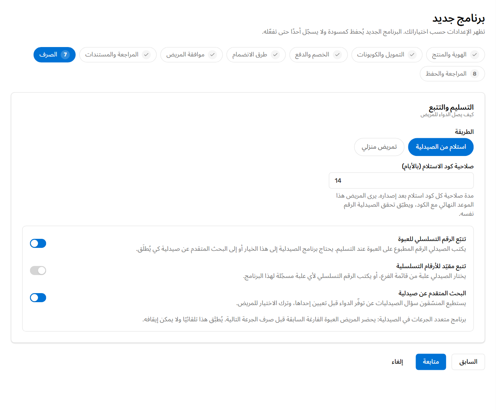
- 1الطريقة: استلام من الصيدلية أو تمريض منزلي.
- 2صلاحية كود الاستلام (بالأيام): مدة صلاحية كل كود استلام. يرى المريض هذا الموعد، وتطبّقه الصيدلية عند الصرف.
- 3تتبّع الرقم التسلسلي للعبوة: يكتب الصيدلي الرقم المطبوع على العلبة عند التسليم. ولا يُطلَق برنامج الصيدلية إلا إذا فُعّل هذا الخيار أو البحث المتقدم عن صيدلية.
- 4تتبع مقيّد للأرقام التسلسلية: عند تفعيله تحمّل أنت قائمة أرقام كل صيدلية، ولا يختار الصيدلي إلا من الأرقام غير المستهلكة في فرعه. وعند إيقافه يختار الصيدلي من قائمة الفرع أو يكتب رقم أي علبة مسجّلة في البرنامج.
- 5البحث المتقدم عن صيدلية: فعّله ليتمكن المنسّقون من سؤال الصيدليات عن الدواء قبل تعيين إحداها.
- 6يوضح السطر تحت المفتاح ما يفعله الآن. عند التفعيل يسأل المنسّقون الصيدليات عن توفّر الدواء، ويختار المريض من بين الصيدليات التي أكّدت توفّره. وعند الإيقاف يعيّن المنسّقون الصيدلية مباشرة.
- 7إذا كان للكوبون أكثر من جرعة، يعيد المريض العلبة الفارغة للجرعة السابقة قبل تسليمه الجرعة التالية، وهذا يسري دائمًا.
سؤال الصيدلية مجرد استفسار: لا يعيّنها للمريض ولا يكشف لها أي بيانات عنه. وهكذا تعمل المفاتيح الثلاثة معًا:
| تتبّع الرقم التسلسلي للعبوة | التتبع المقيّد للأرقام التسلسلية | البحث المتقدم عن صيدلية |
|---|---|---|
| مفعّل | مفعّل | غير متاح: يُوقف ويُعطَّل، ويظهر تحته غير متاح أثناء تفعيل التتبّع المقيَّد للأرقام التسلسلية. |
| مفعّل | متوقف | يمكن تفعيله. |
| متوقف | (لا يظهر) | يمكن تفعيله، وعندها يمكن إطلاق البرنامج دون تتبّع الأرقام التسلسلية، ويظهر مخزون صيدلياته المخزون غير متتبَّع. |
في تمريض منزلي تكتب تعليمات التحضير التي يقرؤها المريض قبل زيارة الممرضة، بالعربية والإنجليزية. ويُدفع برنامج التمريض المنزلي دائمًا عبر التطبيق.
٨. المراجعة والحفظ
يفتح زر متابعة في خطوة الصرف خطوة المراجعة والحفظ، وفيها ملخص للبرنامج كله. اضغط إنشاء البرنامج لحفظه كمسودة (وعند تعديل برنامج محفوظ يصبح الزر حفظ)، فتعود إلى قائمة البرامج. هذا هو المكان الوحيد الذي يحفظ فيه المُنشئ.
إعداد برنامج أو نسخه بملف Excel
فوق شريط الخطوات ثلاثة أزرار لملفات Excel، ولا يراها إلا مسؤولو المشغّل والمسؤول الرئيسي.
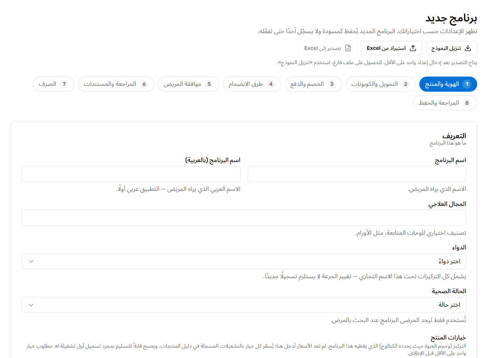
- 1المُنشئ: برنامج جديد، أو تعديل البرنامج لبرنامج محفوظ.
- 2تنزيل النموذج: نموذج Excel فارغ لتملأه.
- 3استيراد من Excel: يملأ خطوات المُنشئ من نموذج مملوء.
- 4تصدير إلى Excel: يحفظ كل ما في المُنشئ الآن في ملف Excel بتنسيق النموذج نفسه.
النموذج. في كل ورقة إعدادات أربعة أعمدة: Key وField (EN) وField (AR) وValue، وفي كل صف إعداد واحد، ولا تكتب إلا في عمود Value. وتتبع الأوراق خطوات المُنشئ:
| الورقة | ما تملؤه |
|---|---|
| Identity | اسم البرنامج بالإنجليزية والعربية، والمنتج والحالة الصحية، ويُختار كل منهما من قائمة منسدلة بقائمة مكتبك |
| Funding | الكوبونات الممولة، والجرعات لكل كوبون |
| Financial | نموذج الخصم، والشكل، والجرعات المدفوعة والمجانية، وأي جرعة تكون مجانية، وأيام المدة وفترة السماح، وشكل المستويات، وهل يوافق المريض على المراجعة المالية |
| Routes | طرق الانضمام الأربع، كل منها TRUE أو FALSE |
| Consent | نص الموافقة وملخص مسار البرنامج بالإنجليزية والعربية |
| Validation | قفل الحالة (دقائق)، ومهلة الرفع (أيام)، وتمديد الرفع، والصلاحية الافتراضية (أيام)، وزيارة المتابعة مع أول يوم وآخر يوم لها |
| Fulfilment | الطريقة، وتتبّع الرقم التسلسلي للعبوة، والتتبع المقيّد، وطريقة تتبّع الأرقام، ومكان دفع المريض، وصلاحية كود الاستلام (أيام)، ومهلة التحذير من انتهاء الصلاحية (أيام)، والبحث المتقدم عن صيدلية، وتعليمات التحضير بالعربية والإنجليزية، واسم مقدّم خدمة التمريض ووسيلة التواصل معه |
ولكل قائمة ورقة خاصة بها، في كل صف بند واحد: Strengths وDiagnoses وTiers وDoseWindows وDocuments وMedicalRejectionReasons وFinancialRejectionReasons وCorrectionReasons وCancellationReasons. وفي ورقة مخفية منتجات مكتبك وحالاته الصحية التي تظهر في القوائم المنسدلة.
بعض القوائم المنسدلة تعرض رموزًا قصيرة بدل كلمات المُنشئ:
| في الملف | في المُنشئ |
|---|---|
| cycleBased / tieredCoPayment | اشترِ واحصل / مشاركة متدرّجة |
| singleOperation / timeWindow | تُشترى معًا / على مدة |
| singleLevel / multipleLevels / fixedLevelWithRejection | مستوى واحد للجميع / عدة مستويات / مستوى واحد مع رفض |
| pharmacy / homeNurse | استلام من الصيدلية / تمريض منزلي |
| none / free / restricted (تتبّع الأرقام) | تتبّع الرقم التسلسلي متوقف / تتبّع الرقم التسلسلي مفعّل / تتبّع الرقم التسلسلي وتتبع مقيّد للأرقام التسلسلية مفعّلان معًا |
| atPharmacy / inApp | عند الصيدلية / عبر التطبيق |
الاستيراد. اضغط استيراد من Excel واختر الملف (ملف .xlsx لا يتجاوز 5 ميجابايت). تفحصه البوابة وتعدّ أخطاءه وتحذيراته، ثم اضغط تعبئة خطوات الإعداد لنقل قيمه إلى الخطوات. وإذا كانت لديك تغييرات لم تحفظها يصبح الزر استبدال تغييراتي، لأن الملف يحل محلها.
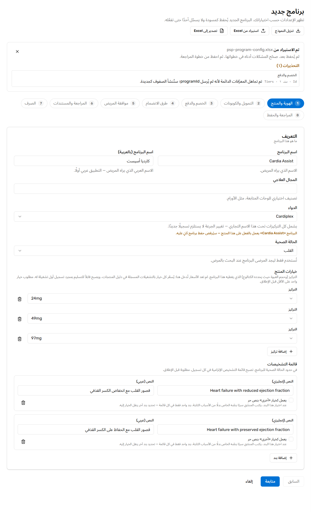
- 1تم الاستيراد من يذكر اسم الملف الذي استخدمته.
- 2لم يُحفظ بعد. راجع كل خطوة وصحّح أي مشكلة مذكورة، ثم احفظ من المراجعة والحفظ.
- 3يخفي هذه النتيجة.
- 4التحذيرات مرتبة حسب خطوات المُنشئ، ولكل منها الورقة والصف والعمود. جاء الملف هنا من برنامج آخر، لذلك تُضاف صفوف قوائمه كصفوف جديدة.
- 5امتلأت الخطوات من الملف، بدءًا من اسم البرنامج.
- 6ما زال المُنشئ يتحقق من القيم: الدواء المنسوخ هنا له برنامج بالفعل، فاختر دواءً آخر قبل الحفظ.
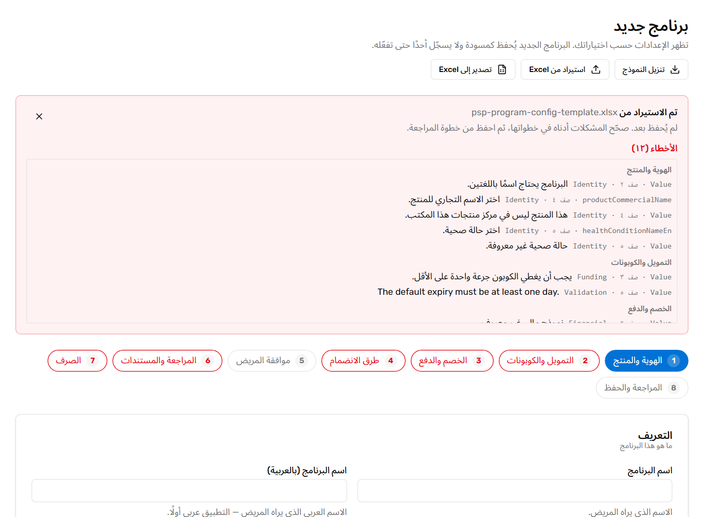
- 1لم يُحفظ بعد. المشكلات مذكورة أدناه، ويجب تصحيحها في خطواتها قبل الحفظ.
- 2الأخطاء: ما يجب تصحيحه.
- 3الأخطاء مجمّعة حسب خطوة المُنشئ التي تخصها، ويذكر كل خطأ الورقة والصف والعمود ثم المطلوب تصحيحه.
- 4الخطوة التي بها خطأ تظهر باللون الأحمر في شريط الخطوات، ويفتح المُنشئ على أولها.
النسخ أو التعديل خارج البوابة. افتح برنامجًا محفوظًا من التعديل في المُنشئ واضغط تصدير إلى Excel، فتحصل على ملف مملوء بكل إعدادات المُنشئ وقوائمه. استورده في برنامج جديد لتبدأ نسخة منه، أو عدّله في Excel واستورده في البرنامج نفسه. ولا يتضمن الملف نموذج التسجيل ولا الشبكات ولا الأماكن.
فحص البرنامج وإطلاقه
افتح البرنامج من القائمة، فتعرض صفحته كل إعداداته وموافقة المريض وفحوص الإطلاق.
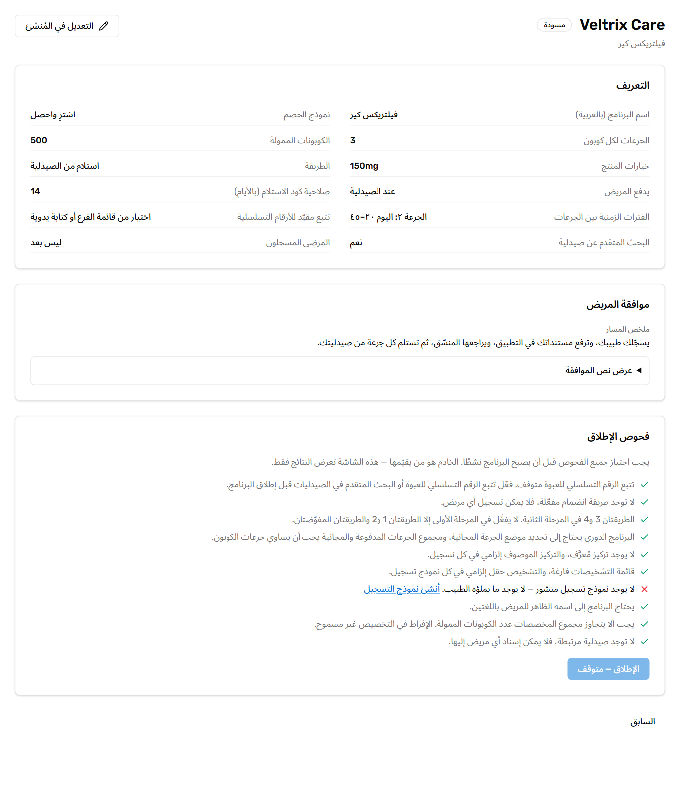
- 1التعديل في المُنشئ يعيد فتح المُنشئ على هذا البرنامج.
- 2إعدادات البرنامج كما حُفظت، ومنها هل البحث المتقدم عن صيدلية مفعّل.
- 3فحوص الإطلاق: يجب اجتياز كل الفحوص قبل أن يصبح البرنامج نشطًا. علامة الصح الخضراء تبيّن ما هو جاهز، والعلامة الحمراء تذكر ما ينقص. ويحتاج برنامج الصيدلية إلى تفعيل تتبّع الرقم التسلسلي للعبوة أو البحث المتقدم عن صيدلية.
- 4أنشئ نموذج التسجيل ينقلك إلى النموذج مباشرة إذا لم يُجتز هذا الفحص.
- 5الإطلاق — متوقف ما دام هناك فحص لم يُجتز. وعند اجتيازها كلها يصبح الزر إطلاق هذا البرنامج: اضغطه فيصبح البرنامج نشطًا.
تعديل البرنامج أو إيقافه
يمكنك تعديل البرنامج في أي وقت من التعديل في المُنشئ. لكن بعد تسجيل أول مريض تُجمَّد ثمانية إعدادات وافق عليها المرضى:
- الجرعات لكل كوبون؛
- نموذج الخصم؛
- أي جرعة تكون مجانية؛
- نسب الخصم في المستويات؛
- مكان الدفع؛
- طريقة الصرف؛
- تتبّع الرقم التسلسلي للعبوة؛
- البحث المتقدم عن صيدلية.
وتظهر عندئذ في صفحة البرنامج عبارة نعم — الإعدادات مجمّدة. ولتغيير هذه الإعدادات أوقف البرنامج وأنشئ برنامجًا جديدًا.
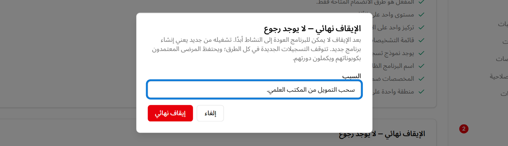
- 1الإيقاف نهائي — لا يوجد رجوع. يتوقف التسجيل الجديد في كل الطرق، ويحتفظ المرضى المعتمدون بكوبوناتهم ويُكملون مسارهم.
- 2السبب: مطلوب، ويُسجَّل في سجل التدقيق.
- 3إيقاف نهائي يوقف البرنامج.
تفتح هذه النافذة من زر إيقاف التسجيلات الجديدة — نهائيًا أسفل صفحة البرنامج النشط.
نموذج التسجيل
نموذج التسجيل هو الاستبيان الذي يجيب عنه الطبيب لتسجيل المريض، ولا يمكن تسجيل أحد بأي طريقة دون نموذج منشور. افتحه من نموذج التسجيل في قائمة البرامج.
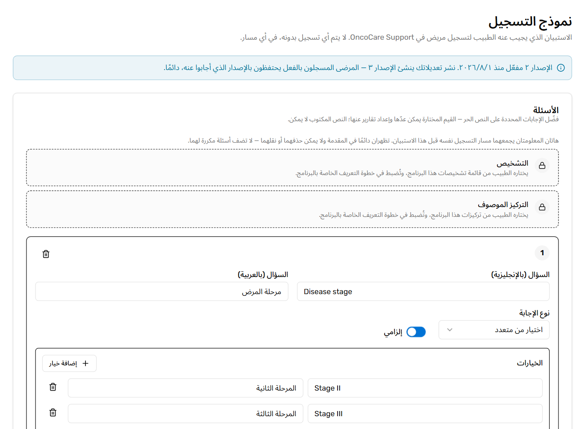
- 1تحت العنوان سطر يذكر الإصدار المعمول به. نشر تعديلاتك ينشئ الإصدار التالي، ويحتفظ المرضى المسجّلون بالإصدار الذي أجابوا عنه.
- 2التشخيص والتركيز الموصوف يُسألان دائمًا أولًا من قوائم البرنامج نفسه. لا يمكن حذفهما، فلا تضفهما مرة أخرى كأسئلة.
- 3السؤال (بالإنجليزية) والسؤال (بالعربية).
- 4نوع الإجابة: اختيار من متعدد أو قائمة منسدلة أو نص حر أو علامة تأكيد.
- 5إلزامي: يجب أن يجيب الطبيب.
- 6إضافة خيار يضيف إجابة لسؤال الاختيار، ويحتاج سؤال الاختيار إلى خيارين على الأقل.
فضّل الإجابات المحددة على النص الحر، فالإجابات المختارة يمكن عدّها في التقارير أما النص المكتوب فلا.
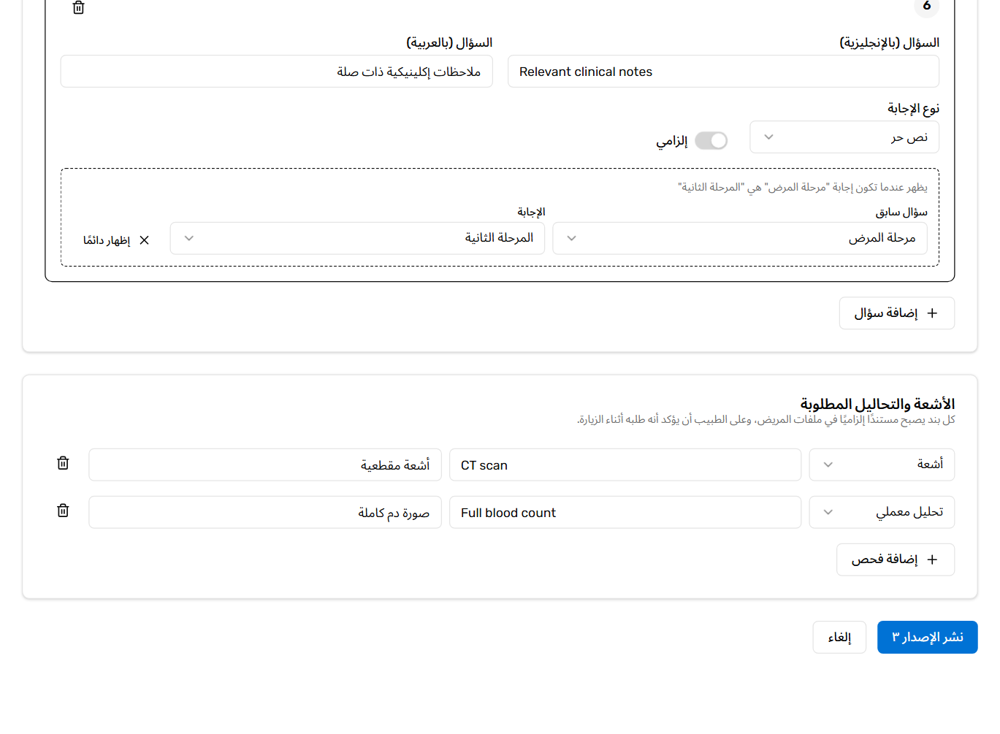
- 1إظهار فقط عندما… يجعل السؤال لا يظهر إلا بعد إجابة معينة. اختر سؤال سابق…
- 2…ثم الإجابة التي تُظهره. ويلغي إظهار دائمًا الشرط.
- 3إضافة سؤال يضيف سؤالًا في النهاية.
- 4الأشعة والتحاليل المطلوبة: كل فحص يصبح مستندًا إلزاميًا يرفعه المريض، ويؤكد الطبيب أنه طلبه.
- 5إضافة فحص: اختر أشعة أو تحليل معملي واكتب اسمه باللغتين.
- 6نشر الإصدار … يجعل تعديلاتك معمولًا بها، وإلغاء يخرج دون نشر.
إذا كان هناك نقص يظهر تنبيه بأنه لا يمكن نشر النموذج بعد، وتُميَّز الحقول التي تحتاج إلى تصحيح.
شبكة الأطباء
لكل برنامج شبكة أطباء خاصة به يمكنهم تسجيل المرضى. يأتي الأطباء من سجل ميدتك، ولا يُنشأ أي طبيب هنا.
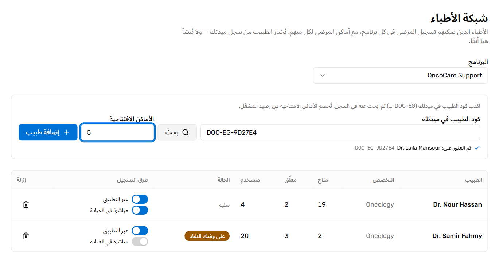
- 1البرنامج: اختر البرنامج أولًا.
- 2كود الطبيب في ميدتك: اكتب كود الطبيب (يبدأ بـ DOC-EG-) ثم اضغط بحث.
- 3السجل الذي عُثر عليه بهذا الكود. تأكد أنه الطبيب المقصود.
- 4الأماكن الافتتاحية: عدد المرضى الذين يمكن للطبيب تسجيلهم في البداية، وتُخصم من رصيد المشغّل.
- 5إضافة طبيب يضيف الطبيب إلى الشبكة.
- 6طرق التسجيل: فعّل طريقة انضمام أو أوقفها لهذا الطبيب وحده.
- 7سلة المهملات لإزالة الطبيب. لا يمكن إزالة طبيب لديه مرضى مسجّلون.
يعرض الجدول أماكن كل طبيب: متاح ومعلّق ومستخدَم، وتنبّه عبارة على وشك النفاد إلى أن أماكن الطبيب أوشكت أن تنتهي.
شبكة الصيدليات
ولكل برنامج أيضًا الصيدليات التي تسلّم دواءه، مع مخزونها.
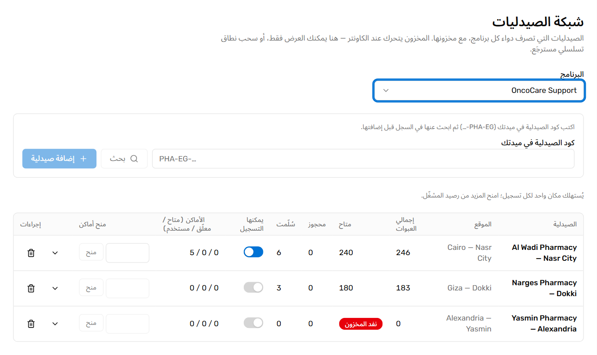
- 1كود الصيدلية في ميدتك: اكتب كود الفرع (يبدأ بـ PHA-EG-)…
- 2…ثم اضغط بحث، وتأكد من الفرع الذي ظهر، واضغط إضافة صيدلية.
- 3مخزون كل فرع: إجمالي العبوات والمتاح والمحجوز وما سُلّم. وتعني نفد المخزون أنه لا توجد علبة متاحة.
- 4يمكنها التسجيل: يسمح لهذا الفرع بتسجيل المرضى عند الكاونتر.
- 5أماكن التسجيل لدى الفرع: المتاح والمعلّق والمستخدم.
- 6اكتب عددًا في منح أماكن واضغط منح لإعطاء الفرع أماكن إضافية من رصيد المشغّل.
- 7يعرض علب الفرع واحدة واحدة مع حالة كل رقم تسلسلي.
لا يظهر يمكنها التسجيل وأعمدة الأماكن إلا إذا كانت طريقة في الصيدلية مفعّلة في البرنامج. وفي البرنامج الذي لا يتتبّع الأرقام التسلسلية لا تُعدّ العلب، فيظهر في عمود متاح المخزون غير متتبَّع بدل الرقم.
لا يمكن تعديل المخزون من هنا، فهو يتحرك عندما تسلّم الصيدلية جرعة. لكن يمكنك أمران:
- سحب نطاق مسترجع. في قائمة مخزون الفرع اضغط سحب نطاق أرقام تسلسلية، وأدخل من الرقم التسلسلي وإلى الرقم التسلسلي، ثم اضغط سحب النطاق. تُسحب كل علب النطاق من مخزون الفرع وتبقى في السجل، ولا يمكن التراجع عن ذلك من هذه الشاشة.
- تحميل الأرقام لبرنامج التتبع المقيّد. إذا كان البرنامج يستخدم التتبع المقيّد للأرقام التسلسلية، يظهر لكل فرع زر لمخزون أرقامه. الصق الأرقام التي وصلت إلى الفرع، رقمًا في كل سطر، في إضافة أرقام تسلسلية (رقم في كل سطر) ثم اضغط إضافة الأرقام، ويُتجاهل المكرر.
وسلة المهملات تزيل الصيدلية من البرنامج، فتتوقف عن استقبال مرضى جدد.
أماكن المرضى
مكان المريض هو ما يستهلكه التسجيل: مكان واحد لكل مريض. تعرض صفحة توزيع الكوبونات من يملك أماكن البرنامج وكيف تُستهلك كوبوناته.
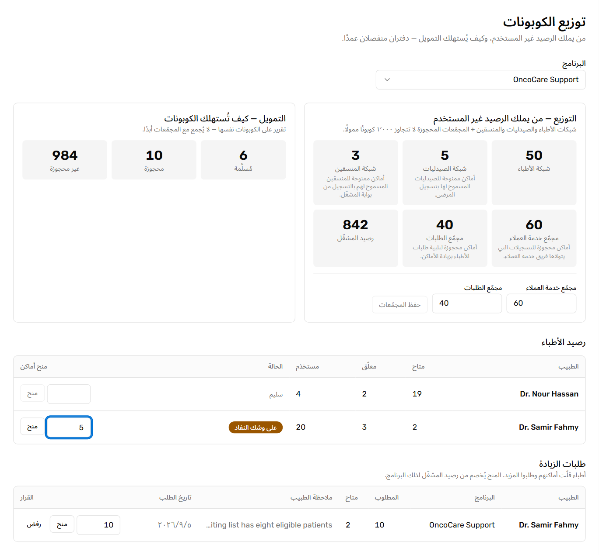
- 1التوزيع — من يملك الرصيد غير المستخدم: الأماكن التي تملكها شبكات الأطباء والصيدليات والمنسّقين والمجمّعان المحجوزان، ولا يتجاوز مجموعها أبدًا عدد الكوبونات الممولة.
- 2رصيد المشغّل: الأماكن التي لا يملكها أحد بعد، ومنه يأتي كل منح.
- 3حدد مجمّع خدمة العملاء ومجمّع الطلبات (المخصص لطلبات الأطباء)، ثم اضغط حفظ المجمّعات.
- 4التمويل — كيف تُستهلك الكوبونات: الكوبونات المسلّمة والمحجوزة وغير المحجوزة. هذا تقرير لا يُجمع أبدًا مع المجمّعات.
- 5رصيد الأطباء: أماكن كل طبيب المتاحة والمعلّقة والمستخدمة.
- 6اكتب عددًا في منح أماكن واضغط منح لإعطاء الطبيب أماكن إضافية.
- 7طلبات الزيادة: أطباء قلّت أماكنهم فطلبوا المزيد. عدّل العدد إذا لزم، ثم اضغط منح أو رفض.
إذا لم يكفِ رصيد المشغّل للمنح، ترفضه البوابة وتذكر لك عدد الأماكن المتبقية.
السماح للصيدليات والمنسّقين بالتسجيل
يمكن للبرنامج، إلى جانب الأطباء، أن يسمح للصيدليات ولمنسّقي البرنامج بتسجيل المرضى. ويتطلب ذلك ثلاثة أمور:
- في المُنشئ، فعّل طريقة الانضمام: في الصيدلية أو عبر بوابة المشغّل (الخطوة ٤).
- اسمح للجهة بالتسجيل: يمكنها التسجيل في شبكة الصيدليات للصيدلية، أو يمكنه التسجيل في صلاحية البرامج للمنسّق.
- امنحها أماكن بزر منح.
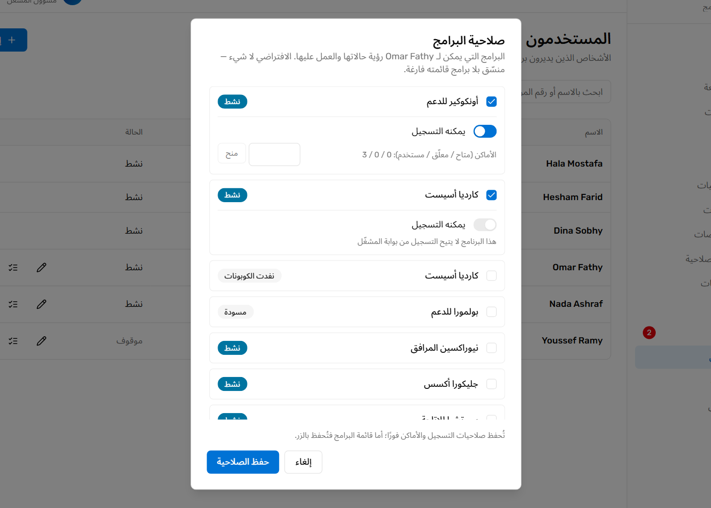
- 1ضع علامة على كل برنامج يمكن للمنسّق رؤية حالاته والعمل عليها.
- 2يمكنه التسجيل: يسمح للمنسّق بتسجيل المرضى في هذا البرنامج، ولا يُتاح إلا إذا كان البرنامج يسمح بالتسجيل عبر بوابة المشغّل.
- 3أماكن المنسّق (المتاح والمعلّق والمستخدم)، مع زر منح لإضافة المزيد.
- 4صلاحية التسجيل والأماكن تُحفظ فورًا، أما قائمة البرامج فتُحفظ بالزر.
- 5حفظ الصلاحية يحفظ البرامج المحددة.
المستخدمون
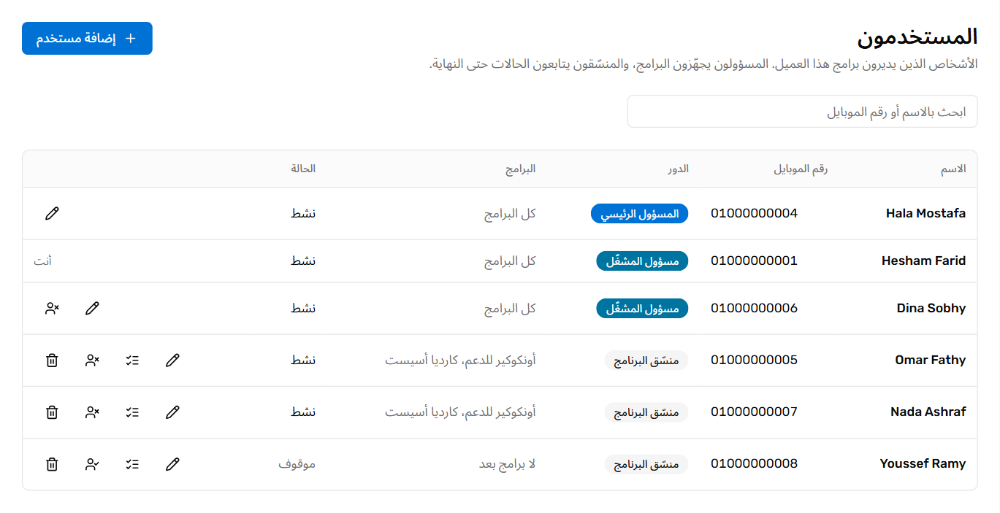
- 1إضافة مستخدم ينشئ حسابًا.
- 2ابحث بالاسم أو رقم الموبايل.
- 3دور كل شخص: المسؤول الرئيسي أو مسؤول المشغّل أو منسّق البرنامج.
- 4القلم لإعادة تسمية المستخدم، ويظهر الاسم الجديد في كل مكان بما في ذلك النشاط اللاحق.
- 5صلاحية البرامج (للمنسّقين فقط) تفتح النافذة الموضحة أعلاه.
- 6يوقف المستخدم، أو يعيد تفعيل مستخدم موقوف.
- 7سلة المهملات لإزالة المستخدم، فيفقد صلاحية الوصول إلى مساحة العمل هذه.
يرى المسؤولون كل البرامج دائمًا، لذلك لا يوجد زر صلاحية في صفوفهم. ويظهر في صفك أنت أنت دون أزرار. ولا يمكن لأحد إيقاف المسؤول الرئيسي أو إزالته.
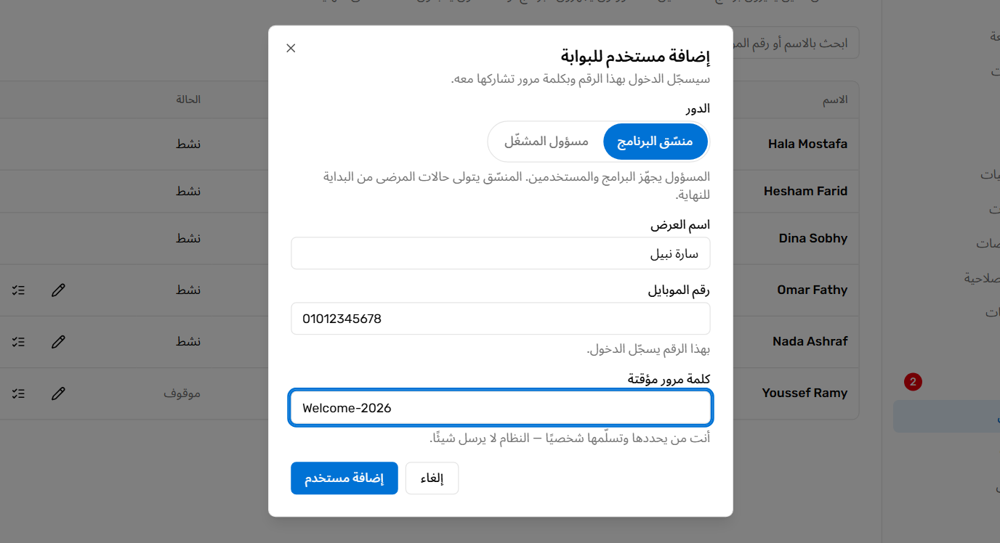
- 1اسم العرض: اسم الشخص كما تعرضه البوابة.
- 2رقم الموبايل: الرقم الذي يسجّل به الدخول.
- 3كلمة مرور مؤقتة: ٩ أحرف على الأقل. أنت من يحددها وتسلّمها بنفسك، فالنظام لا يرسل شيئًا.
- 4الدور: منسّق البرنامج أو مسؤول المشغّل.
- 5إضافة مستخدم ينشئ الحساب.
بعد إضافة منسّق، افتح صلاحية البرامج الخاصة به وحدد برامجه.
التمريض المنزلي: السعة والزيارات
في برنامج التمريض المنزلي تُعطى كل جرعة في زيارة ممرضة يحجزها المريض من التطبيق، وتحدد سعة الممرضات المواعيد المتاحة للحجز.
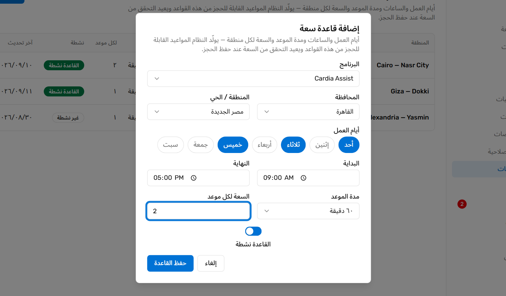
- 1البرنامج: برنامج تمريض منزلي، فلا يمكن ضبط القواعد على برامج الصيدليات.
- 2المحافظة.
- 3المنطقة / الحي التي تغطيها القاعدة.
- 4أيام العمل: اضغط على كل يوم تعمل فيه الممرضات.
- 5وقت البداية والنهاية، ومدة الموعد.
- 6السعة لكل موعد: عدد الزيارات التي يتسع لها الموعد الواحد، ولا تقل عن ١.
- 7القاعدة نشطة: أوقفها لتعليق القاعدة دون فقدانها.
اضغط حفظ القاعدة. تعرض صفحة سعة الممرضات كل القواعد، ويمكنك تعديل أي منها بزر تعديل. ولا يمكن إطلاق برنامج تمريض منزلي قبل أن تغطي قاعدة نشطة منطقة واحدة على الأقل.
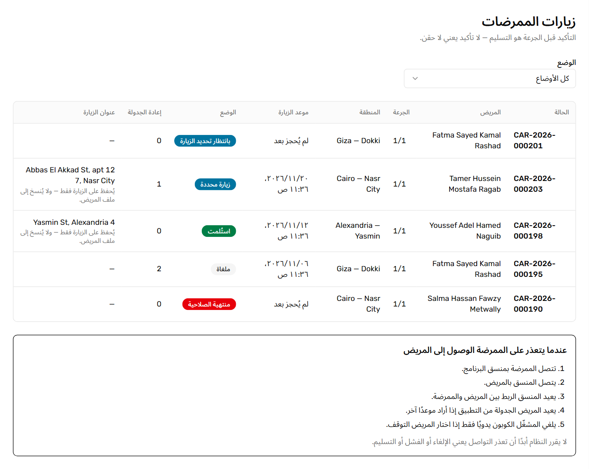
- 1صفِّ الزيارات حسب الوضع.
- 2وضع الزيارة، من بانتظار تحديد الزيارة إلى استُلمت.
- 3عنوان الزيارة يُحفظ على الزيارة فقط ولا يُنسخ إلى ملف المريض.
- 4عندما يتعذر على الممرضة الوصول إلى المريض: الخطوات التي يتبعها الجميع.
- 5لا يقرر النظام أبدًا أن تعذّر التواصل يعني الإلغاء أو الفشل أو التسليم.
حد الكوبونات
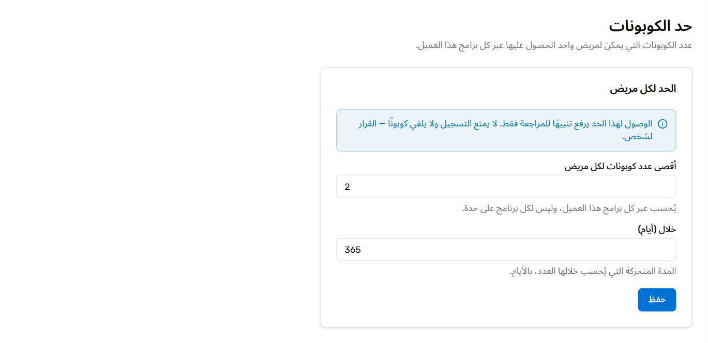
- 1الوصول إلى هذا الحد يرفع علامة للمراجعة، ولا يوقف أي تسجيل ولا يلغي أي كوبون؛ فالقرار لشخص.
- 2أقصى عدد كوبونات لكل مريض، يُحسب عبر كل برامج هذا العميل.
- 3خلال (أيام): المدة المتحركة التي يُحسب خلالها العدد.
- 4حفظ.
سجل التدقيق
يعرض سجل التدقيق كل أحداث الإعدادات والحالات في هذا المكتب، الأحدث أولًا، ولا تُعدَّل قيوده ولا تُحذف أبدًا.
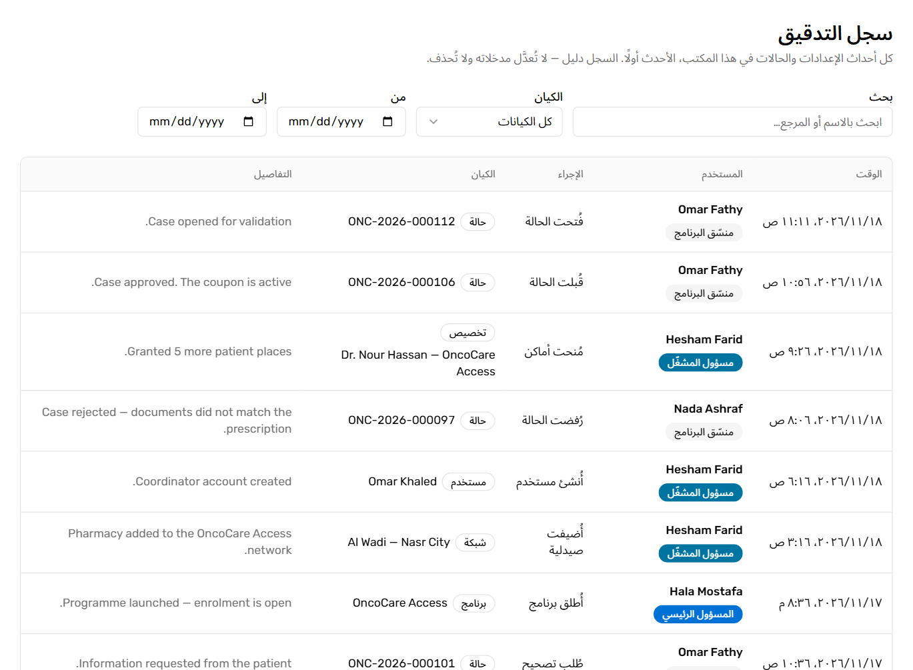
- 1بحث بالاسم أو المرجع.
- 2الكيان: اعرض نوعًا واحدًا من السجلات، مثل البرامج أو الحالات أو المستخدمين أو المنتجات.
- 3من وإلى: نطاق التاريخ.
- 4المستخدم: من قام بالإجراء، ودوره.
- 5الإجراء: ما الذي تم.
- 6التفاصيل: التغيير في جملة واحدة.
لوحات المتابعة
تعرض لوحات المتابعة مجموعة ثابتة من الأرقام عن برامجك.
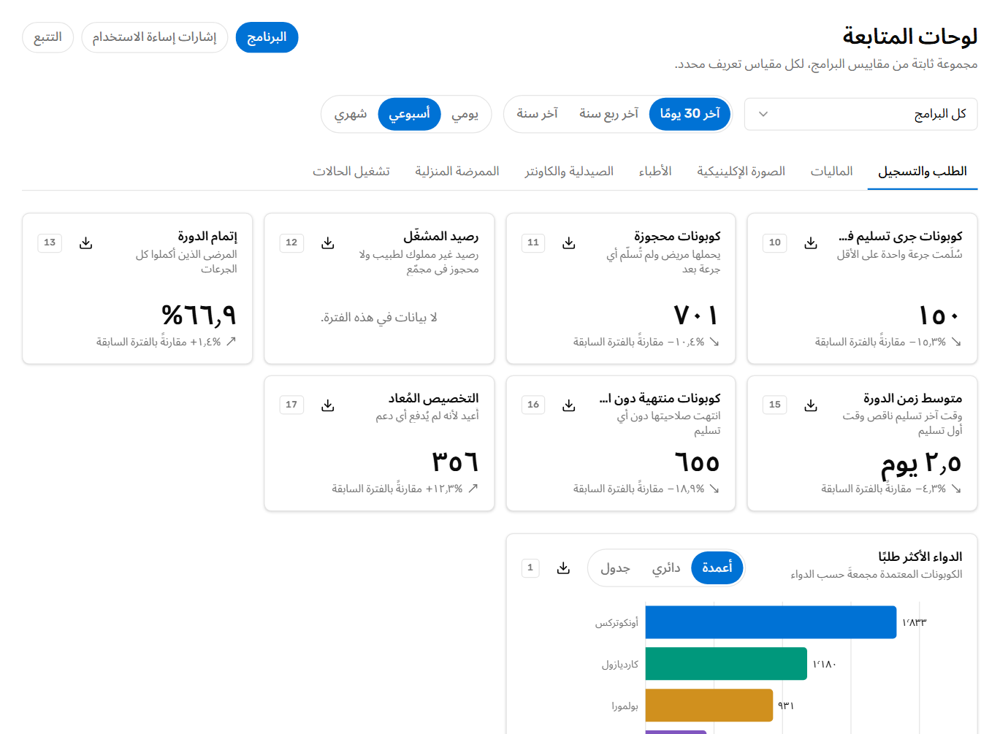
- 1ثلاثة عروض: البرنامج (المعروض هنا)، وإشارات إساءة الاستخدام، والتتبع.
- 2اعرض كل البرامج أو برنامجًا واحدًا.
- 3الفترة: آخر 30 يومًا أو آخر ربع سنة أو آخر سنة.
- 4تجميع الأرقام باليوم أو الأسبوع أو الشهر.
- 5الأقسام: الطلب والتسجيل والماليات والصورة الإكلينيكية والأطباء والصيدلية والكاونتر والممرضة المنزلية وتشغيل الحالات.
تُقارَن الأرقام الرئيسية بالفترة السابقة. ويصدّر زر التنزيل في كل رقم ملف CSV، ويمكن تبديل بعض الرسوم بين الأعمدة والدائرة والجدول.
- إشارات إساءة الاستخدام تعرض أنماطًا قد تستحق النظر، مثل مريض واحد يحمل عدة كوبونات للدواء نفسه. كل إشارة ترفع علامة لمراجعة بشرية فقط، ولا يُوقف شيء أو يُلغى تلقائيًا.
- التتبع يتابع عنصرًا واحدًا: اختر عرضًا (مثل رحلة مريض واحد كاملة أو تاريخ كوبون واحد)، واكتب مرجع الموضوع (كودًا وليس اسمًا أبدًا)، ثم اضغط تتبع. ويعرض كل عنصر معلَّق كل ما ينتظر إجراءً من أحد الآن.
تقارير التعويضات
يبيّن تقرير التعويضات ما تستحقه الصيدلية عن خصم كل جرعة سلّمتها. تولّد البوابة كل تقرير وتحفظه، والملف المحفوظ هو النسخة المعتمدة.
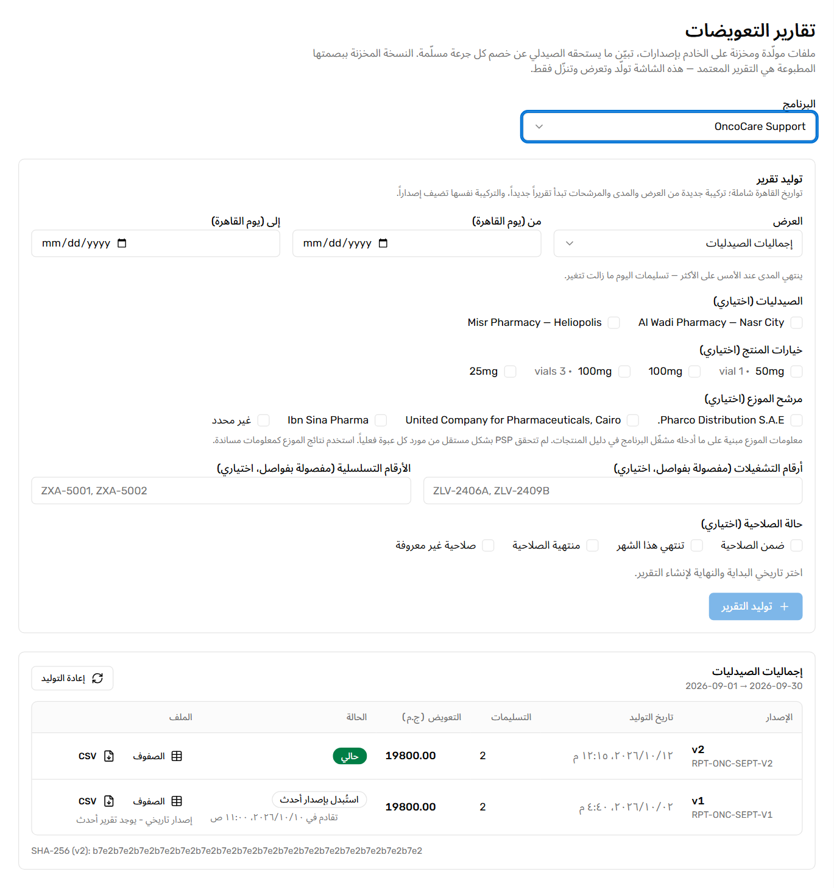
- 1البرنامج: اختر البرنامج.
- 2العرض: إجماليات الصيدليات أو تفصيل بحسب الموزع.
- 3من (يوم القاهرة) وإلى (يوم القاهرة)، وينتهي النطاق عند الأمس على الأكثر.
- 4مرشحات اختيارية: الصيدليات وخيارات المنتج والموزعون وأرقام التشغيلات وأرقام العلب وحالة الصلاحية.
- 5توليد التقرير.
- 6إعادة التوليد ينشئ إصدارًا جديدًا من التقرير بنطاقه ومرشحاته الأصلية.
- 7الصفوف تعرض تسليمات الإصدار على الشاشة، وCSV ينزّل ملفه المحفوظ.
توليد العرض نفسه بالنطاق والمرشحات نفسها مرة أخرى يضيف إصدارًا جديدًا، ويُوسم الإصدار الأقدم بعبارة استُبدل بإصدار أحدث مع الاحتفاظ بملفه. وإذا لم يطابق أي تسليم لا يُولَّد شيء.
الإشعارات
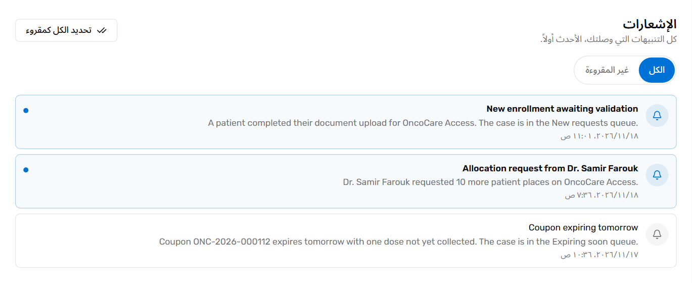
- 1تحديد الكل كمقروء يزيل علامات غير المقروء.
- 2اعرض الكل أو غير المقروءة فقط.
- 3كل تنبيه، الأحدث أولًا.
تصلك تنبيهات مثلًا عندما يطلب طبيب أماكن إضافية، أو عندما يقترب كوبون من انتهاء صلاحيته.
عمل الحالات
مراجعة الحالات، وقائمة الحالات، وتسجيل مريض من البوابة، ومتابعة الكوبونات القريبة من انتهاء الصلاحية من عمل المنسّقين. وفي البرامج التي فُعّل فيها البحث المتقدم عن صيدلية يستطيع المنسّقون أيضًا سؤال الصيدليات عن توفّر الدواء قبل تعيين إحداها. وصفحتا زيارات الممرضات وقرب انتهاء الصلاحية مفتوحتان لك أيضًا. تجد كل ذلك في دليل المنسّق.
للمسؤول الرئيسي
يستخدم المسؤول الرئيسي البوابة نفسها بالصفحات والصلاحيات نفسها التي لمسؤول المشغّل، مع بعض الفروق:
- إزالة المسؤولين. المسؤول الرئيسي وحده يستطيع إزالة مسؤول المشغّل. يمكن لمسؤول المشغّل إنشاء مسؤولين آخرين وإيقافهم، لكن لا يظهر له زر الإزالة في صفوفهم.
- مسؤول رئيسي واحد. لا يمكن إيقاف حساب المسؤول الرئيسي ولا إزالته، ولا يمكن لأحد إنشاء مسؤول رئيسي ثانٍ، فاختيار الدور لا يتيح إلا منسّق البرنامج ومسؤول المشغّل.
- رسم دورة التسجيل. يرى المسؤول الرئيسي أيضًا في لوحات المتابعة أين تنتظر الحالات بين التسجيل والاستلام.
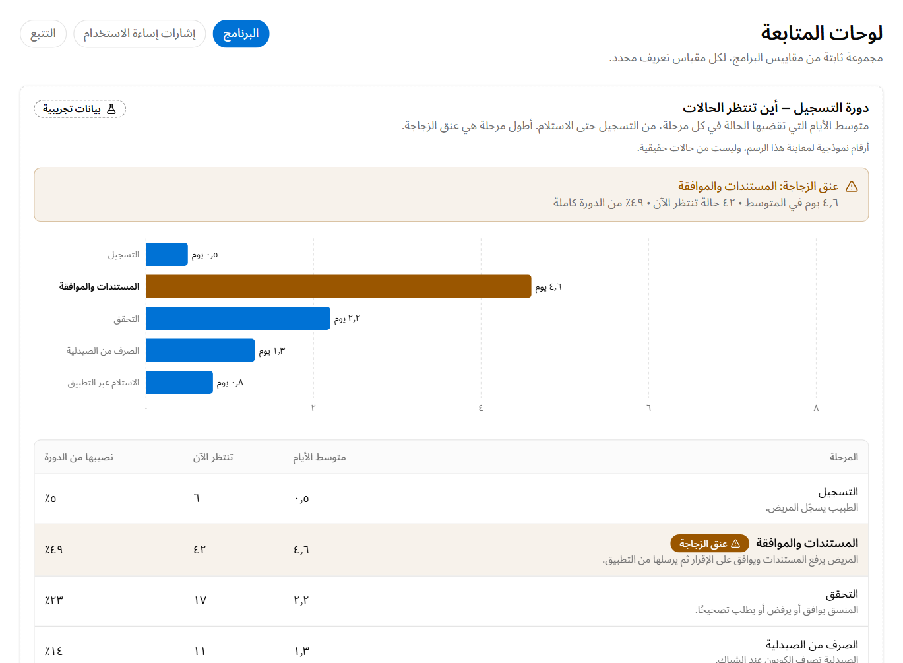
- 1دورة التسجيل — أين تنتظر الحالات: متوسط الأيام التي تقضيها الحالة في كل مرحلة، من التسجيل حتى الاستلام.
- 2بيانات تجريبية: يعرض الرسم حاليًا أرقامًا نموذجية، لا حالاتك الفعلية.
- 3أطول مرحلة، أي عنق الزجاجة، مع متوسط أيامها وعدد الحالات المنتظرة فيها الآن.
- 4يعرض الجدول كل مرحلة بمتوسط أيامها والحالات المنتظرة الآن ونصيبها من الدورة كاملة.
إجابات سريعة
لماذا لا أستطيع حفظ برنامج ثانٍ على الدواء نفسه؟ لأن الدواء الواحد لا يقوم عليه إلا برنامج واحد.
أعددت البرنامج لكن زر الإطلاق ما زال متوقفًا. اقرأ العلامات الحمراء تحت فحوص الإطلاق. أكثرها شيوعًا: نموذج تسجيل غير منشور، أو قائمة تشخيصات فارغة، أو عدم وجود صيدلية في الشبكة، أو برنامج صيدلية أُوقف فيه تتبّع الأرقام التسلسلية والبحث المتقدم عن صيدلية معًا.
لا يستطيع الطبيب تسجيل أي مريض. تأكد أن البرنامج نشط، وأن الطبيب في شبكته ولديه أماكن متاحة، وأن طريقة الانضمام مفعّلة له.
لا يرى المنسّق أي حالة. افتح المستخدمون ثم صلاحية البرامج الخاصة به، وحدد برامجه.
كتبت سعر تشغيلة خاطئًا. احذف التشغيلة وسجّلها من جديد، ما دام لم تُبع منها أي علبة.
هل يمكن التراجع عن إيقاف البرنامج؟ لا، فالإيقاف نهائي؛ أنشئ برنامجًا جديدًا بدلًا منه.